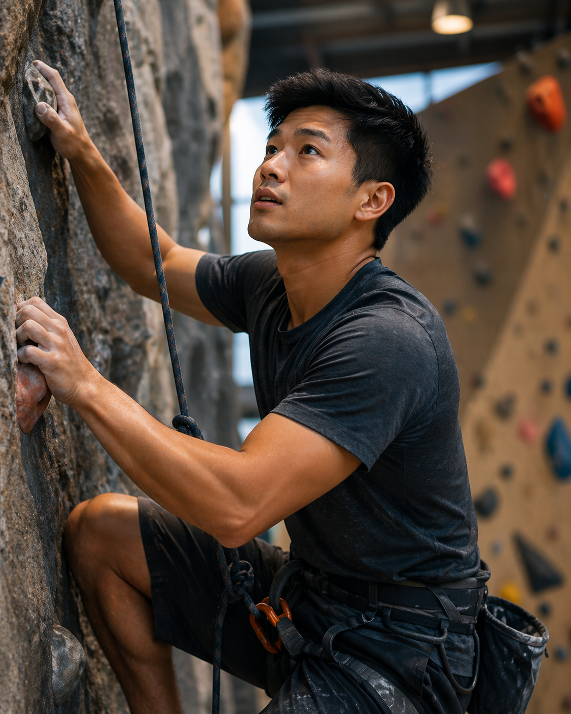

Designing for real climbing mindsets
CRAG is shaped around two users: a beginner who wants confidence, encouragement, and guidance, and a regular climber who wants clearer progress, steady motivation, and stronger social coordination.
Linh Chen
Primary Persona - Beginner Indoor Boulderer
Representative Quote
“I want to feel that I’m getting better, even when I’m still not climbing very hard routes.”
View Details
Linh Chen
Primary Persona - Beginner Indoor Boulderer
Representative Quote
“I want to feel that I’m getting better, even when I’m still not climbing very hard routes.”

Profile
- 22 years old
- University student
- Usually climbs once a week
Background
Linh started indoor bouldering recently after seeing friends post about it online. She enjoys climbing, but still feels uncertain about technique, gym etiquette, and how to judge whether she is improving.
Goals
- Build confidence as a beginner
- Understand whether she is making progress
- Find beginner-friendly sessions and climbing partners
- Feel less intimidated in the gym environment
Behaviours
- Tries climbing casually after class or at weekends
- Takes photos of routes but does not keep structured records
- Relies on friends or social media for inspiration
- Often forgets what she climbed last time
Frustrations
- Cannot clearly see progress from session to session
- Feels awkward asking strangers for help or to climb together
- Finds some climbing apps too advanced or too content-heavy
- Loses motivation when a session feels unsuccessful
Motivations
- Wants a fun form of exercise
- Enjoys the satisfaction of completing routes
- Likes the idea of being part of a friendly climbing community
- Is motivated by encouragement more than competition
Needs For A Digital Product
- Simple session logging
- Beginner-friendly guidance and encouragement
- Easy ways to discover social sessions, events, or partners
- Positive feedback that highlights improvement, not just grade
Ethan Wu
Secondary Persona - Regular Indoor Climber
Representative Quote
“I want one place where I can track my climbing, stay psyched, and connect with people to climb with.”
View Details
Ethan Wu
Secondary Persona - Regular Indoor Climber
Representative Quote
“I want one place where I can track my climbing, stay psyched, and connect with people to climb with.”

Profile
- 26 years old
- Regular indoor climber
- Climbs two to three times per week
Background
Ethan enjoys pushing to harder grades, but he is equally motivated by climbing with others, sharing beta, and discovering new sessions or events. He already uses general fitness and social apps, but none of them fully fit climbing.
Goals
- Track progression more meaningfully over time
- Stay motivated between sessions
- Coordinate with partners and discover community events
- Share achievements and beta without needing multiple tools
Behaviours
- Climbs regularly and compares current performance with past sessions
- Shares climbing content in group chats or on social media
- Tries to remember projects, sends, and route preferences
- Is willing to join challenges if they feel relevant and fair
Frustrations
- Uses fragmented tools for notes, chat, and activity tracking
- Finds general fitness apps too generic for climbing
- Wants social energy without constant pressure from competition
- Has no clear way to combine progress tracking with community engagement
Motivations
- Enjoys mastery and visible improvement
- Feels energised by climbing with friends and meeting new people
- Likes goal-oriented experiences and playful challenge loops
- Values recognition, but prefers meaningful feedback over vanity metrics
Needs For A Digital Product
- Climbing-specific logging and personal progress summaries
- Community features for meetups, events, and partner-finding
- Optional playful challenges and streaks
- A clearer connection between effort, progress, and social participation